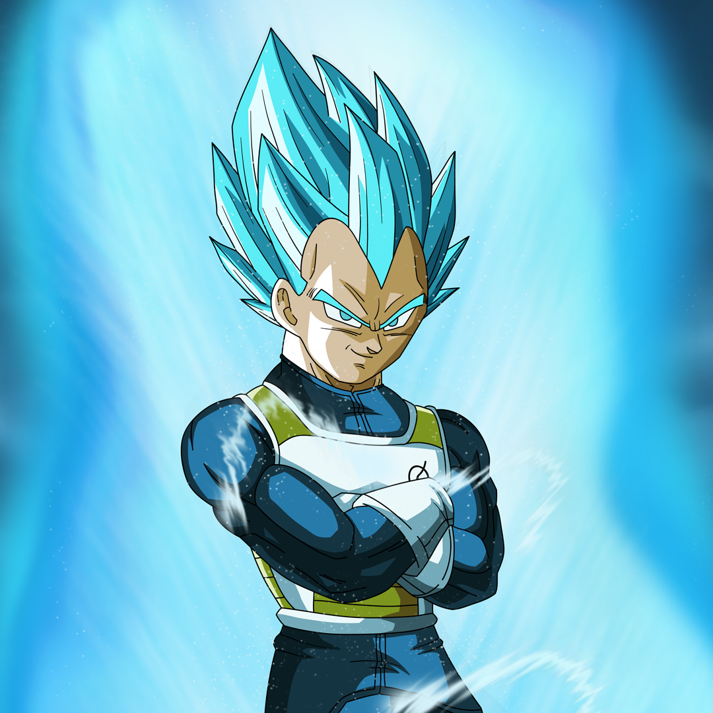
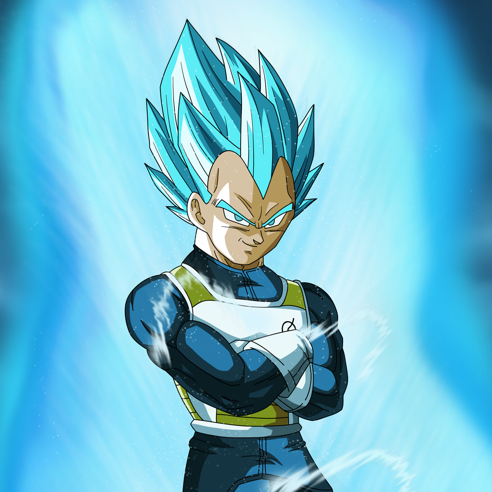
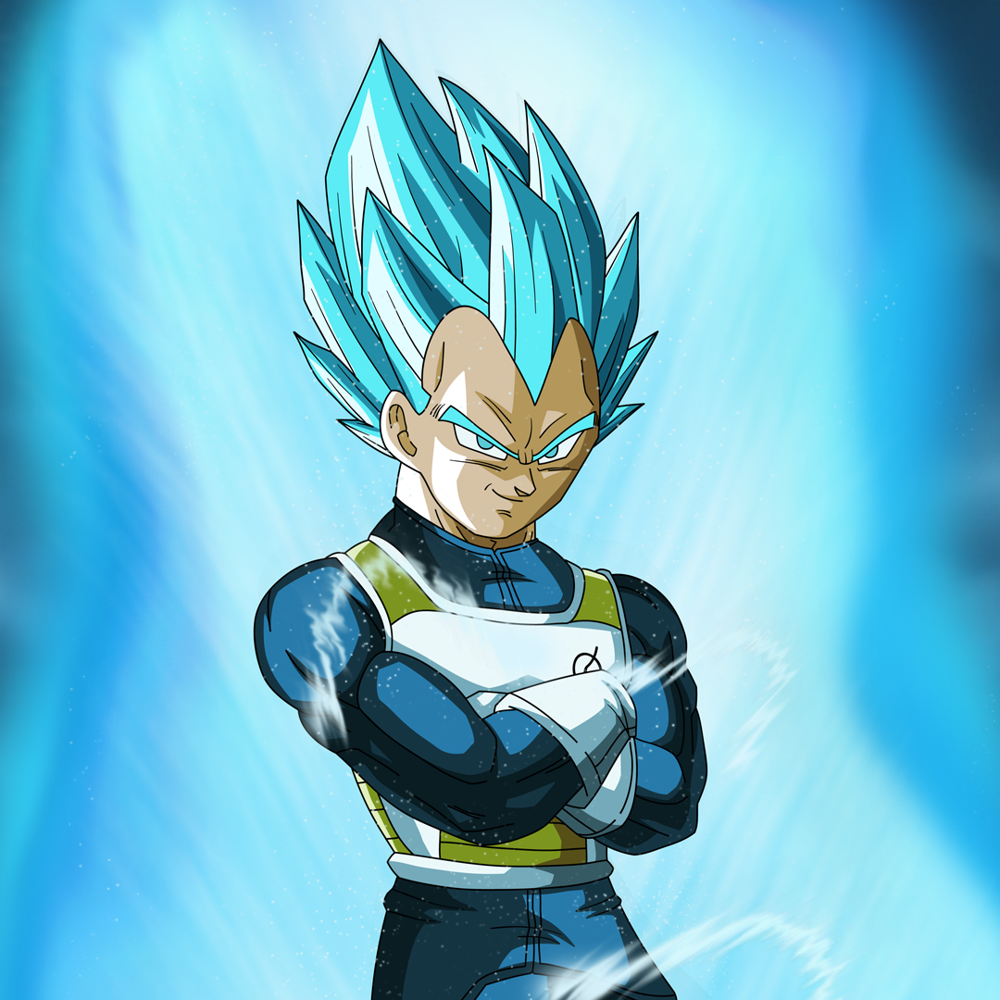
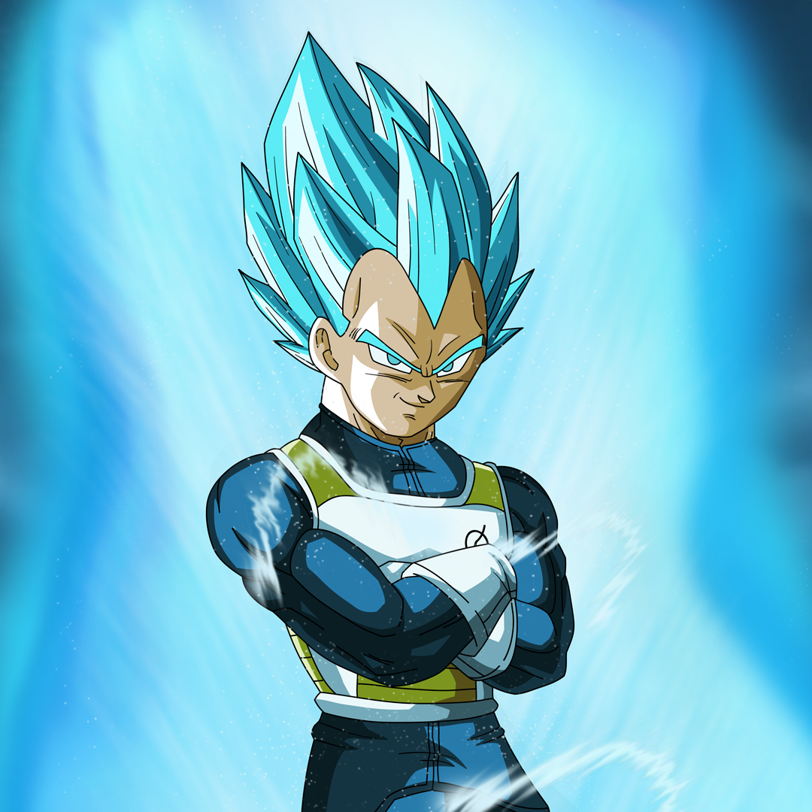
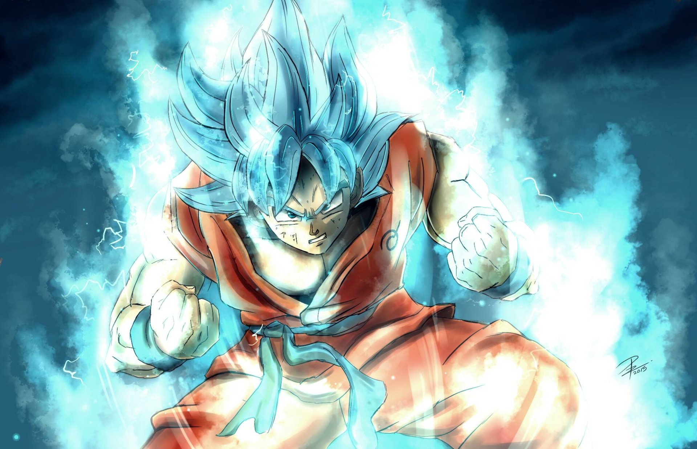
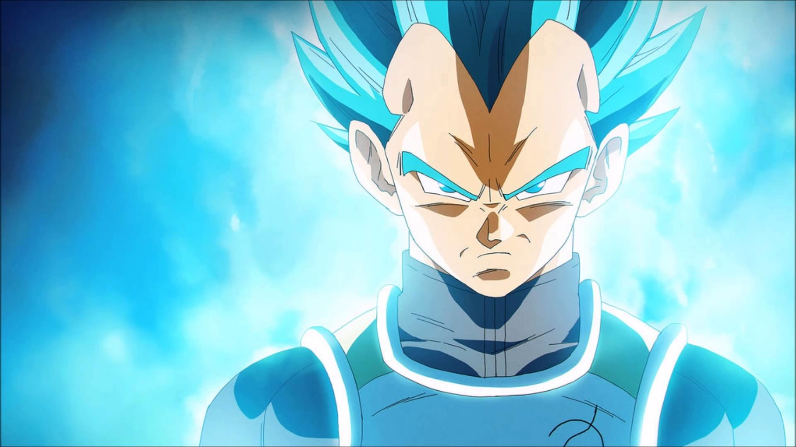

孫悟空被布瑪帶出深山一起尋找七龍珠，在結束搜尋後與克林一起拜龜仙人為師學習武術，修行完畢後兩人參加天下一武道會，最後悟空在決賽敗給由龜仙人假扮的成龍後又在此開始尋找七龍珠，但是在搜尋途中卻遇上意圖利用七龍珠征服世界的紅緞帶軍。由於悟空打倒紅緞帶軍多個將領，紅緞帶軍聘用桃白白來應對，悟空也因此被打敗，後來接受凱里神的修練，成功打倒桃白白並且消滅紅緞帶軍。 3年後悟空與飲茶及克林參加天下一武道會，但卻遇上也有參加武道會的鶴仙人徒弟天津飯及餃子，最後悟空在決賽被打敗，天津飯取得優勝，但此時克林卻被比克大魔王的手下殺害，悟空為此挑戰比克大魔王但是卻戰敗。後來悟空接受凱里神的試煉後，最後用龍拳成功打倒比克大魔王，但是比克大魔王卻在臨死前產下自己的兒子比克，悟空也因此接受神的修練。三年後悟空等人一起參加天下一武道會，比克也為父仇而參加，最後悟空在決賽打敗比克取得優勝。 5年後賽亞人拉帝茲來到地球尋找悟空加入同伴，由於悟空的抗拒使孫悟飯被拉帝茲帶走成為人質。最後悟空和比克一起打倒拉帝茲，但悟空也為此犧牲並被神帶走恢復悟空的肉身，推薦他到界王那裏開始索巴煉，這時候還有另外兩名賽亞人將在一年後來到地球，於是大家各自為時一年的索巴練.....。1年後達爾和那霸為了七龍珠來到地球與比克等人展開戰鬥，但悟空因為七龍珠復活的關係趕到時卻只剩克林和悟飯存活，比克為了保護悟飯而犧牲，最後悟空打倒那霸並且並擊退達爾。 布瑪、悟飯、克林為了使同伴藉由七龍珠復活而來到納美克星，卻發現達爾和弗利沙同樣也在各自尋找七龍珠。達爾在成功奪取弗利沙的龍珠，弗利沙便指示基紐特戰隊奪回，達爾因此與悟飯和克林合力對抗基紐特戰隊，但還是不敵對方七龍珠也被奪走，此時悟空趕到納美克星並打倒基紐特戰隊，但悟空因而重傷接受治療。在納美克星人們的協助下，比克藉由七龍珠復活並來到納美克星，此時弗利沙趕到並且與達爾、悟飯、克林展開戰鬥，但即使後來比克和悟空陸續參戰但依舊不敵弗利沙。最後悟空因為克林死亡而變身為超級賽亞人而打敗了弗利沙。 1年後出現來自未來的特南克斯，悟空等人從他得知3年後紅領巾軍的生化人破壞未來和平事情而各自開始修行。3年後生化人19號和20號出現並且與悟空等人展開戰鬥，此時悟空因病發而敗退。在19號被達爾破壞後，20號逃到研究所啟動不聽命的17號和18號而喪命。在眾人敗給生化人們後得知另一外來自未來的生化人賽魯企圖吸收17號和18號成為完全體，賽魯在後來的戰鬥成功變成完全體並且舉辦名為「賽魯遊戲」的武道會。最後悟飯變身為超級賽亞人2打倒賽魯，但悟空卻在此戰中喪命而特南克斯也回到未來恢復和平。 7年後悟飯等人與來自陰界的悟空一起參加天下一武道會，在比賽中途界王神向悟空等人尋求協助並告知魔導師巴比提企圖使魔人普烏復活。但是由於達爾受到巴比提的魔法控制的關係，與悟空展開決鬥使魔人普烏得以復活。悟飯被普烏打敗後隨界王神來到界王神界修練，悟空在傳授融合術給孫悟天和特南克斯後也來到界王神界。普烏後來產生異變後便找到比克、悟天、特南克斯展開戰鬥，後來悟空、悟飯也在中途參戰，但最後除悟空外都被普烏吸收，身陷危機的悟空最後與達爾共同打倒普烏。10年後悟空帶普烏的轉世烏普展開修行之旅。

最初認為在地球上出生，悟空後來得知他是叫賽亞人，一個外星好戰種族的成員，也是他超越常人力量的原因。他出生的名字是卡卡羅特。隨著悟空長大，他慢慢地成為了地球上最強的戰士。他誓死保護地球，打倒那些想要傷害它的敵人。悟空被描繪成一個性格開朗和親近別人的人物，但也會經常幻想自己在對戰。他能夠集中他的氣，及使用它的破壞力，然後化成強大的能量攻擊。最著名的是他從他師父龜仙人學回來的招式-龜派氣功，是一種從悟空手掌發射出的藍色氣功，撞到物體後會產生爆炸。此外他有一顆純潔的心，使得悟空頻繁地授予他的敵人一條生路，這經常為他贏得了一些戰友和摯友。
達爾是賽亞人民族的王子，是一個自尊心極強、驕傲、寂寞而且嚴肅的戰士。貝吉達的妻子是布瑪，生有一子特南克斯和一女普拉，有一個被父親放逐的弟弟塔布爾與弟媳菇樂。
孫悟飯是中孫悟空的長子，為賽亞人與地球人的混血，其命名之意為紀念從小收養孫悟空的爺爺「孫悟飯」。長大後的身高為176公分，61公斤。天生善良且不好戰鬥，但受到威脅時被迫戰鬥。他的戰鬥潛力極高，通過父親的幫助成功變身為超級賽亞人，後因專於學習，疏於修練，使戰鬥潛力最後並未化為實力。